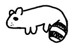
0.필수 세팅
1.툴 선택 방법
2.펜 옵션 박스
3.메뉴 버튼
4.리플레이 모드
5.프로그램 초기화
6.라소 툴 사용법
7.캔버스 크기 바꾸기
8.프로그램 사용 예시 <- 돌아가기
1.툴 선택 방법
2.펜 옵션 박스
3.메뉴 버튼
4.리플레이 모드
5.프로그램 초기화
6.라소 툴 사용법
7.캔버스 크기 바꾸기
8.프로그램 사용 예시 <- 돌아가기
설명은 프로그램 사용할때 가장 필요한 순서대로 나열했습니다.
와콤 드라이버 설정 창을 열고 맵핑 탭의 "Windows 잉크 사용" 체크를 해제해 주세요, 사용 시 선이 이상하게 그어집니다.
와콤 이외의 타블렛에서는 테스트 되지 않아, 정상작동 하지 않을 수 있습니다.
만일 마우스 오른쪽 클릭을 사용하고 싶지 않은 경우, 2번 경우를 읽어주세요.
먼저 타블렛 펜 버튼 설정을 위 그림처럼 마우스 오른쪽 버튼과, 스페이스 키로 바꾸어 주세요. 마우스 오른쪽 버튼을 누르면 툴 박스가 나타나고 떼면 사라집니다.
마우스 오른쪽 버튼을 누르면 툴 박스가 나타나고 떼면 사라집니다.
툴 박스는 위쪽에는 어두운 아이콘, 아랫쪽에는 밝은 아이콘으로 나뉘어져 있습니다. 어두운 색깔의 툴 버튼은 클릭 후 드래그 하면 툴 특성에 따라서 줌이 되거나, 캔버스가 회전합니다.
줌 버튼은 클릭한 위치를 중심으로 확대/축소가 되므로 원하는 위치로 메뉴를 옮긴 후에 사용하세요. 메뉴는 마우스 커서를 따라 다닙니다.
만일 아무 툴도 선택하지 않고 툴 박스를 끄고 싶으면 검은 색 부분에 커서를 위치한후 마우스 오른쪽 버튼을 떼세요. 밝은 색깔의 버튼을 선택하기 위해서는 마우스 커서를 원하는 툴 아이콘에 위치 시킨 후 마우스 오른쪽 버튼을 떼세요.
밝은 부분을 아무데나 클릭 후 드래그 하면 캔버스 자체를 움직일 수 있습니다.
오른쪽 아래 점으로 된 부분을 클릭후 드래그 하면 툴 박스 크기를 조절 할 수 있습니다.
펜 툴과 지우개 툴은 번갈아 가며 활성화 됩니다, 펜 아이콘 왼쪽 위에 작은 선은 직선 툴입니다.
지우개 툴을 선택하면 직선툴은 점선모양의 지우개-직선툴로 바뀝니다. 라소 툴을 사용할때 툴 박스와 비슷한 메뉴가 나오는데 사용법이 약간 다르므로 여기를 참고하세요. 아래 동영상은 툴 박스의 사용법을 보여줍니다. 마우스 조작을 어떻게 하는지 유의하며 보세요.
이것을 켜면 마우스 오른쪽 클릭을 이용해 툴박스를 조작할 수 없습니다.
기본적으로 단순 클릭만으로 툴을 선택할 수 있습니다.
이동 툴(Move tool)과 캔버스 회전 툴(Rotate canvas)은 아이콘을 클릭+드래그를 하면됩니다.
줌 툴(Zoom canvas)는 아이콘을 클릭하면 확대부분을 선택하라는 힌트가 나옵니다. 그 상태에서 캔버스에 원하는 지점을 클릭한채로 마우스를 움직이면 확대/축소가 됩니다.
캔버스 자체를 이동하려면 밝은 부분 아이콘을 아무거나 클릭+드래그하세요.
툴 윗 쪽의 작은 돌기를 클릭+드래그하면 툴 박스 위치를 이동할 수 있습니다.
아래 동영상을 참고하세요.
기본적인 사용법은 키를 누르고 있으면 활성화되고, 떼면 꺼집니다. A, Z, X, F (K, M, ,, G)키는 그냥 눌렀다 떼도 됩니다.
캡쳐 모드에서 단축키
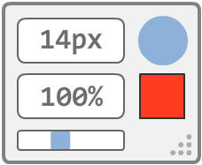 흰색 박스는 펜 크기를, 검은색 박스는 펜 색깔을 바꿀수 있습니다.
커서를 상자위에 올리게 되면 옵션 창이 뜨고 커서가 창밖을 벗어나면 옵션창이 꺼집니다.
박스의 빈 부분을 클릭+드래그 하면 박스가 이동 됩니다. 만일 실수로 창이 켜졌다면 ESC키를 누르거나, 마우스 오른쪽 버튼을 클릭하면 빠르게 닫을 수 있습니다. 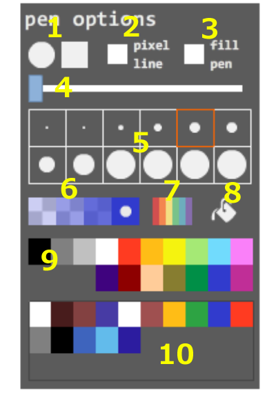 1: 펜모양을 바꿉니다.
2: 손떨림 방지를 조절합니다.수치가 클수록 선이 늦게 따라오지만 깔끔한 선이 그어집니다.
3: 펜 설정 프리셋 상자입니다. 펜크기, 투명도, 모양을 선택한 후 등록을 원하는 곳에 오른쪽 클릭 혹은, Ctrl키+클릭하면 프리셋이 등록됩니다.
4: 펜크기 목록입니다.
5: 펜(지우개) 투명도 조절 상자 입니다.
* 지우개와 펜(직선)의 크기,투명도 데이터는 따로 관리합니다. 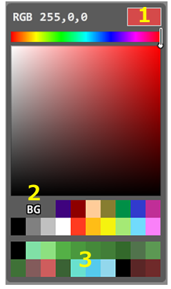 1: 컬러 세트 변경 버튼입니다.
2: 선택한 색을 보여주는 상자입니다.
3: 현재 선택된 색을 보여주는 상자입니다. 클릭하면 2번 상자의 색을 초기화 할 수 있습니다.
4: 컬러 히스토리 상자입니다. 사용한색을 기록합니다. 오른쪽 클릭하거나 Ctrl키+클릭 하면 선택된 색을 수동으로 추가할 수 있습니다.
5: 컬러 선택 상자입니다.
6: 펜(지우개) 투명도 조절 상자 입니다. 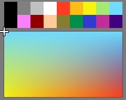 1번 컬러 세트에서 a아이콘을 선택하면 나오는 컬러 세트입니다. drawr의 컬러 프리셋이 저장되어 있으며,
색을 선택 할 때마다 아래의 상자에서 그라데이션으로 색을 섞어줍니다. 아래 동영상은 펜 옵션 박스의 사용법을 보여줍니다.
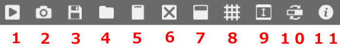 [1] 저장 프로그램을 켜고 처음 저장할 때만 경로와 이름을 묻고, 그다음에는 자동으로 저장하게 됩니다.
새로운 경로와 이름으로 저장하고 싶다면, 이 버튼을 길게 누르세요.
*.png 파일과 *.2020 파일, 2개를 저장합니다. 2020 확장자의 파일은 배경이 투명색인 원래 이미지 데이터와, 리플레이 데이터를 담고 있습니다. 만일 이어서 그릴경우 2020확장자 파일을 불러오는것을 권장합니다.
극히 드문 경우이지만, 다른 프로그램에서 저장한 파일을 사용하고 있을경우 저장이 되지 않으므로. 파일 이름뒤에 "_new"라는 이름을 붙여서 다시 저장을 시도합니다.
저장하고 싶은 영역을 드래그 하면 파일명_무작위문자.png 형식으로 저장 됩니다.
취소하고 싶으면 드래그 하지 않고 그냥 클릭하면 됩니다.
단축키는 Alt+S입니다. 사용법은 아래 동영상을 참고하세요. 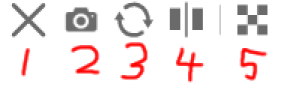 (1) 캡쳐모드 종료
(2) 전체 이미지 저장
(3) 캡쳐 이미지 회전
(4) 캡쳐 이미지 좌우 반전
(5) 캡쳐 이미지 배경색 제거 [3] 불러오기 이미지 불러오기는 *.2020 파일과, *.png, *.gif, *.jpg를 불러올 수 있습니다. 파일 아이콘을 창에 끌어놓아 불러올 수도 있습니다.
프로그램에서 지원하는 최대 해상도는 2000x2000이며, 이미지가 이 해상도를 넘을 시 강제로 리사이즈 됩니다.
단축키는 Ctrl+O입니다. [4] 데이터 삭제 버튼을 3번 연속해서 누르면, 녹화된 리플레이 데이터와, 이미지를 지웁니다.
단축키 ESC를 3번 눌러도 지워집니다. [5] 배경색 변경 지우개의 색깔이 배경색과 똑같이 설정됩니다. [6] 툴 박스 켜기/끄기 툴 박스를 켜고 끕니다, 부가 설명은 여기를 참고하세요. [7] 윈도우 컬러 변경 창 색깔을 변경하거나, 투명도를 조절합니다. [8] 프로그램 정보 프로그램의 정보를 봅니다. 프로그램 실행시간, 제 트위터와 이메일, 언어별 설명서가 링크되어 있습니다.
아랫쪽의 시계 아이콘을 클릭하면 프로그램 실행시간을 초기화 할 수 있습니다.
창 아랫쪽의 Used memory 는 캔버스 크기가 클수록, 복잡한 이미지를 그릴수록 증가합니다.
Cached image는 리플레이모드에서 프레임 탐색 성능 향상을 위해서 만든 이미지의 용량입니다. 오래 그린 그림일수록 용량이 증가합니다.
만일 새 버전이 있을경우 이 창이 자동적으로 뜹니다. [9] 리플레이 모드 리플레이 모드/그리기 모드로 번갈아 가며 변경합니다. 리플레이 모드에 대한 설명은 여기를 참고하세요. [10] 리플레이 재생/정지 버튼 [11] 재 녹화 버튼 리플레이 모드에서 특정 이미지 부터 다시 녹화하고 싶은 경우, 이 버튼을 2번 누르세요.
현재까지의 모든 녹화 데이터가 지워지고 특정 프레임의 이미지부터 다시 녹화합니다 [12] 수퍼-되돌리기 버튼 그리기 모드에서는 7번까지만 되돌리기(undo)가 허용됩니다.
하지만 리플레이 모드에서는 모든 과정이 담겨있기 때문에 특정 지점부터 Undo를 한후에 다시 그리기가 가능합니다.
프레임 탐색으로 원하는 이미지를 선택한 후에 이 버튼을 2번 누르면 됩니다.
이 버튼은 그리기 모드에서 Undo가 가능한 프레임에서는 나타나지 않습니다.
프레임 탐색 막대에 회색으로 된 구분 선이 있는데, 그 선보다 작은 프레임이어야만 이 버튼이 활성화 됩니다.
아래 동영상을 참고하세요.
그리는 과정을 다시 볼 수 있고, 원하는 부분부터 다시 그릴 수도, *.2020파일로 저장과 불러오기도 할 수 있습니다.
리플레이 모드에서 나타나는 메뉴 버튼에 대한 설명은 여기를 참고하세요.
프로그램 창 아랫쪽의 프레임 탐색 막대를 이용하면, 일반적인 동영상과 같이 중간에서 부터 리플레이를 재생할수 있습니다. 하지만 수퍼 되돌리기(Super undo)기능 등을 사용할때 탐색 막대로 원하는 이미지를 선택 할 수 없는 경우가 있습니다.
그럴때는 위 그림의 왼쪽에 있는 2개의 Next와 Prev버튼을 이용하세요, 스트로크 단위로 프레임을 탐색할 수 있습니다.
단축키는 좌,우 화살표키 입니다. Shift키를 누른채로 버튼 또는 단축키 누르면 1프레임 단위로 탐색이 됩니다. 이전 프레임을 탐색할때는 이미지를 특정 지점부터 다시 그려야 하기 때문에, 탐색이 느려 질 수 있습니다.
리플레이 모드도 툴 박스가 있습니다. 마우스 오른쪽 클릭으로 켜고 끄거나, Tool-box ON/OFF버튼을 누르세요.
캔버스 확대/축소, 회전하기, 리플레이 속도조절, 커서 따라 이동하기, 4가지 기능이 있습니다. 클릭+드래그가 기본 조작입니다. 커서 따라 이동하기(Follow replay-cursor)버튼은 그냥 클릭만 해도 됩니다.
캔버스를 클릭+드래그 하면 캔버스 이동이 됩니다.
리플레이 속도 조절에서 괄호 안에 있는 숫자는 총 재생 시간을 의미합니다, 예를들어 x43[12.6 min]은 43배속으로 재생했을때 총 재생시간이 12.6분이라는 의미입니다.
재생 속도가 빠를수록 cpu처리량이 많아집니다.
위/아래 화살표키로도 속도를 조절할수도 있습니다. 커서 따라 이동하기(Follow replay-cursor) 버튼을 활성화 하면, 커서가 프로그램 창 바깥으로 넘어갔을때, 자동적으로 커서를 따라가서 그리고 있는 위치를 보여줍니다.
단축키 Enter키로 재생/정지 할 수 있습니다.
창을 닫을 때 현재 이미지와 상태를 저장하고, 켜면, 그 데이터를 복원합니다.
프로그램 상태가 이상하거나, 초기 상태로 돌리고 싶은경우,
Shift키를 누른상태로 창을 닫으면 다음에 열때 초기화된 상태로 열립니다. 만일 프로그램을 종료하지 않고 곧바로 컴퓨터를 종료하거나 재부팅 할 경우,
이미지와 프로그램 상태가 저장 되지 않으므로 먼저 프로그램을 정상적으로 닫은 후에, 컴퓨터를 종료할 것을 권장 합니다.
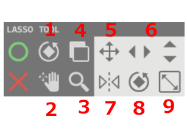 라소툴을 선택후 캔버스에 수정하고 싶은 영역을 그립니다.
그러면 라소툴메뉴가 마우스커서에 따라 붙습니다.
뒤집기(Mirror)와 복사(Copy)버튼은 클릭, 다른 버튼들은 클릭+드래그로 이미지를 조절하면 됩니다.
라소툴 사용중 툴 박스를 사용하여 캔버스를 조작할수도 있습니다.
단축키 화살표 키로 1픽셀식 이동 가능하며, Enter와 Esc로 확인과 취소를 할 수 있습니다.
아래 동영상을 참고하세요.
캔버스 크기 바꾸는 방법은, 캔버스의 회색 테두리를 마우스 오른쪽 클릭을 하면 하늘색으로 색이 바뀝니다.
그 상태에서 마우스 왼쪽 클릭을 한 후 커서를 움직여주세요.
캔버스 밖을 나간 이미지 데이터는 사라집니다.
최대크기는 2000x2000픽셀입니다.
단축키 Ctrl키를 누른상태로, 캔버스 테두리를 클릭+드래그 해도 크기를 바꿀 수 있습니다.
아래 동영상을 참고하세요.
필수 세팅
와콤 드라이버 설정 창을 열고 맵핑 탭의 "Windows 잉크 사용" 체크를 해제해 주세요, 사용 시 선이 이상하게 그어집니다.
와콤 이외의 타블렛에서는 테스트 되지 않아, 정상작동 하지 않을 수 있습니다.
툴 선택 방법
1.마우스 오른쪽 클릭을 사용해서 툴 선택
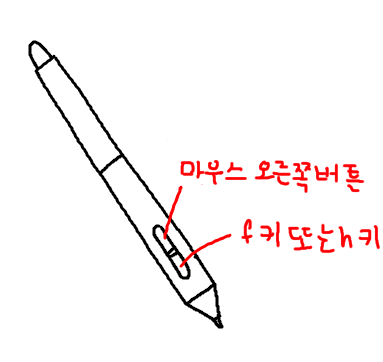 이 프로그램의 기본 설정입니다. 단축키를 이용하지 않고, 한 손으로 빠르게 조작할수 있도록 고안된 방법입니다.만일 마우스 오른쪽 클릭을 사용하고 싶지 않은 경우, 2번 경우를 읽어주세요.
먼저 타블렛 펜 버튼 설정을 위 그림처럼 마우스 오른쪽 버튼과, 스페이스 키로 바꾸어 주세요.
마우스 오른쪽 버튼을 누르면 툴 박스가 나타나고 떼면 사라집니다.툴 박스는 위쪽에는 어두운 아이콘, 아랫쪽에는 밝은 아이콘으로 나뉘어져 있습니다. 어두운 색깔의 툴 버튼은 클릭 후 드래그 하면 툴 특성에 따라서 줌이 되거나, 캔버스가 회전합니다.
줌 버튼은 클릭한 위치를 중심으로 확대/축소가 되므로 원하는 위치로 메뉴를 옮긴 후에 사용하세요. 메뉴는 마우스 커서를 따라 다닙니다.
만일 아무 툴도 선택하지 않고 툴 박스를 끄고 싶으면 검은 색 부분에 커서를 위치한후 마우스 오른쪽 버튼을 떼세요. 밝은 색깔의 버튼을 선택하기 위해서는 마우스 커서를 원하는 툴 아이콘에 위치 시킨 후 마우스 오른쪽 버튼을 떼세요.
밝은 부분을 아무데나 클릭 후 드래그 하면 캔버스 자체를 움직일 수 있습니다.
오른쪽 아래 점으로 된 부분을 클릭후 드래그 하면 툴 박스 크기를 조절 할 수 있습니다.
펜 툴과 지우개 툴은 번갈아 가며 활성화 됩니다, 펜 아이콘 왼쪽 위에 작은 선은 직선 툴입니다.
지우개 툴을 선택하면 직선툴은 점선모양의 지우개-직선툴로 바뀝니다. 라소 툴을 사용할때 툴 박스와 비슷한 메뉴가 나오는데 사용법이 약간 다르므로 여기를 참고하세요. 아래 동영상은 툴 박스의 사용법을 보여줍니다. 마우스 조작을 어떻게 하는지 유의하며 보세요.
2.마우스 오른쪽 클릭을 사용하지 않고 툴 선택
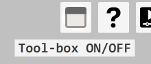 마우스 오른쪽 클릭을 사용하고 싶지 않은 경우, 프로그램 창 오른쪽 위의 Tool-box ON/OFF 버튼을 클릭하면 툴박스가 나타납니다.이것을 켜면 마우스 오른쪽 클릭을 이용해 툴박스를 조작할 수 없습니다.
기본적으로 단순 클릭만으로 툴을 선택할 수 있습니다.
이동 툴(Move tool)과 캔버스 회전 툴(Rotate canvas)은 아이콘을 클릭+드래그를 하면됩니다.
줌 툴(Zoom canvas)는 아이콘을 클릭하면 확대부분을 선택하라는 힌트가 나옵니다. 그 상태에서 캔버스에 원하는 지점을 클릭한채로 마우스를 움직이면 확대/축소가 됩니다.
캔버스 자체를 이동하려면 밝은 부분 아이콘을 아무거나 클릭+드래그하세요.
툴 윗 쪽의 작은 돌기를 클릭+드래그하면 툴 박스 위치를 이동할 수 있습니다.
아래 동영상을 참고하세요.
3.단축키를 사용해서 툴 선택
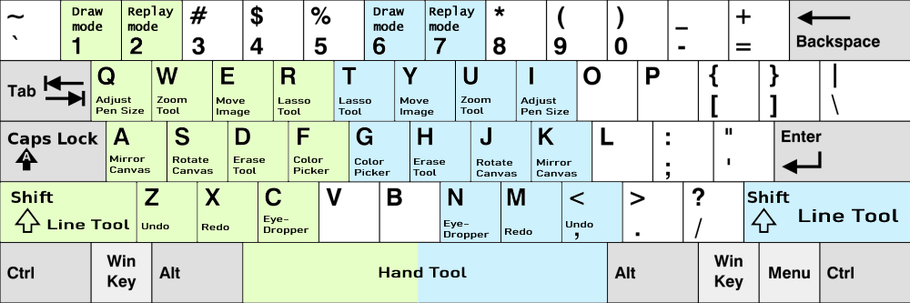 단축키 배열은 위와 같습니다. 녹색 영역은 오른손잡이, 파란색 영역은 왼손잡이 용 입니다.기본적인 사용법은 키를 누르고 있으면 활성화되고, 떼면 꺼집니다. A, Z, X, F (K, M, ,, G)키는 그냥 눌렀다 떼도 됩니다.
| 기능 | 단축키 | 기능 | 단축키 |
|---|---|---|---|
| 지우개 툴 | D - H | 라소 툴 | R - T |
| 지우개-직선 툴 | Shift+D - H | 직선 툴 | Shift |
| 지우개 크기 조절 | D - H + F G | 펜 크기 조절 | F G |
| 지우개 투명도 조절 | D - H + V B | 펜 투명도 조절 | V B |
| 캔버스 확대/축소 | W - U | 캔버스 이동 | Space |
| 캔버스 좌우 반전 | A - K | 캔버스 회전 | S - J |
| 색깔 선택 창 | F - G | 캔버스 이미지 이동 | E - Y |
| 색깔 선택 툴 | C - N | ||
| 작업취소 | Z - , | 그리기 모드 | 1 - 6 |
| 되돌리기 | X - M | 리플레이 모드 | 2 - 7 |
| 파일 저장 | Ctrl+S | 리플레이 재생 시작/정지 | Enter |
| 다른이름으로 저장 | Ctrl+Shift+S | 재생속도 조절 | ↑ ↓ |
| 이미지 캡쳐 | Alt+S | 스트로크 단위로 프레임 탐색 | ← → |
| 파일 불러오기 | Ctrl+O | 1프레임 단위로 프레임 탐색 | Shift+← → |
| 전체 이미지 저장 | Alt+S |
| 이미지 회전 | S |
| 이미지 반전 | A |
| 캡쳐 모드 종료 | ESC |
펜 옵션 박스
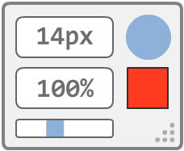 흰색 박스는 펜 크기를, 검은색 박스는 펜 색깔을 바꿀수 있습니다.
커서를 상자위에 올리게 되면 옵션 창이 뜨고 커서가 창밖을 벗어나면 옵션창이 꺼집니다.
박스의 빈 부분을 클릭+드래그 하면 박스가 이동 됩니다. 만일 실수로 창이 켜졌다면 ESC키를 누르거나, 마우스 오른쪽 버튼을 클릭하면 빠르게 닫을 수 있습니다. 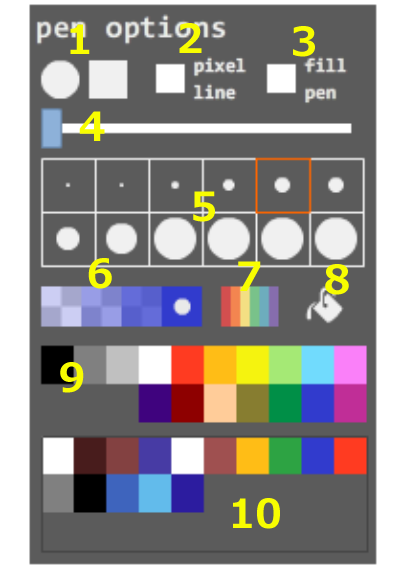 1: 펜모양을 바꿉니다.
2: 손떨림 방지를 조절합니다.수치가 클수록 선이 늦게 따라오지만 깔끔한 선이 그어집니다.
3: 펜 설정 프리셋 상자입니다. 펜크기, 투명도, 모양을 선택한 후 등록을 원하는 곳에 오른쪽 클릭 혹은, Ctrl키+클릭하면 프리셋이 등록됩니다.
4: 펜크기 목록입니다.
5: 펜(지우개) 투명도 조절 상자 입니다.
* 지우개와 펜(직선)의 크기,투명도 데이터는 따로 관리합니다. 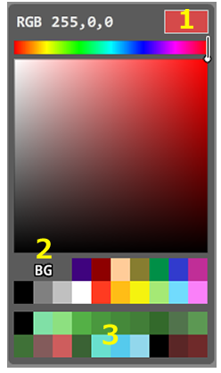 1: 컬러 세트 변경 버튼입니다.
2: 선택한 색을 보여주는 상자입니다.
3: 현재 선택된 색을 보여주는 상자입니다. 클릭하면 2번 상자의 색을 초기화 할 수 있습니다.
4: 컬러 히스토리 상자입니다. 사용한색을 기록합니다. 오른쪽 클릭하거나 Ctrl키+클릭 하면 선택된 색을 수동으로 추가할 수 있습니다.
5: 컬러 선택 상자입니다.
6: 펜(지우개) 투명도 조절 상자 입니다. 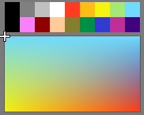 1번 컬러 세트에서 a아이콘을 선택하면 나오는 컬러 세트입니다. drawr의 컬러 프리셋이 저장되어 있으며,
색을 선택 할 때마다 아래의 상자에서 그라데이션으로 색을 섞어줍니다. 아래 동영상은 펜 옵션 박스의 사용법을 보여줍니다.
메뉴 버튼
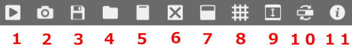 [1] 저장 프로그램을 켜고 처음 저장할 때만 경로와 이름을 묻고, 그다음에는 자동으로 저장하게 됩니다.
새로운 경로와 이름으로 저장하고 싶다면, 이 버튼을 길게 누르세요.
*.png 파일과 *.2020 파일, 2개를 저장합니다. 2020 확장자의 파일은 배경이 투명색인 원래 이미지 데이터와, 리플레이 데이터를 담고 있습니다. 만일 이어서 그릴경우 2020확장자 파일을 불러오는것을 권장합니다.
극히 드문 경우이지만, 다른 프로그램에서 저장한 파일을 사용하고 있을경우 저장이 되지 않으므로. 파일 이름뒤에 "_new"라는 이름을 붙여서 다시 저장을 시도합니다.
단축키는 Ctrl+S이며, 다른 이름으로 저장은 Shift+Ctrl+S 입니다.
[2] 이미지 캡쳐 그리기 모드에서 이미지만 저장하고 싶거나, 리플레이 모드에서 그려지고 있는 이미지를 저장하고 싶을때 이 버튼을 사용하세요.저장하고 싶은 영역을 드래그 하면 파일명_무작위문자.png 형식으로 저장 됩니다.
취소하고 싶으면 드래그 하지 않고 그냥 클릭하면 됩니다.
단축키는 Alt+S입니다. 사용법은 아래 동영상을 참고하세요. 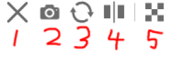 (1) 캡쳐모드 종료
(2) 전체 이미지 저장
(3) 캡쳐 이미지 회전
(4) 캡쳐 이미지 좌우 반전
(5) 캡쳐 이미지 배경색 제거 [3] 불러오기 이미지 불러오기는 *.2020 파일과, *.png, *.gif, *.jpg를 불러올 수 있습니다. 파일 아이콘을 창에 끌어놓아 불러올 수도 있습니다.
프로그램에서 지원하는 최대 해상도는 2000x2000이며, 이미지가 이 해상도를 넘을 시 강제로 리사이즈 됩니다.
단축키는 Ctrl+O입니다. [4] 데이터 삭제 버튼을 3번 연속해서 누르면, 녹화된 리플레이 데이터와, 이미지를 지웁니다.
단축키 ESC를 3번 눌러도 지워집니다. [5] 배경색 변경 지우개의 색깔이 배경색과 똑같이 설정됩니다. [6] 툴 박스 켜기/끄기 툴 박스를 켜고 끕니다, 부가 설명은 여기를 참고하세요. [7] 윈도우 컬러 변경 창 색깔을 변경하거나, 투명도를 조절합니다. [8] 프로그램 정보 프로그램의 정보를 봅니다. 프로그램 실행시간, 제 트위터와 이메일, 언어별 설명서가 링크되어 있습니다.
아랫쪽의 시계 아이콘을 클릭하면 프로그램 실행시간을 초기화 할 수 있습니다.
창 아랫쪽의 Used memory 는 캔버스 크기가 클수록, 복잡한 이미지를 그릴수록 증가합니다.
Cached image는 리플레이모드에서 프레임 탐색 성능 향상을 위해서 만든 이미지의 용량입니다. 오래 그린 그림일수록 용량이 증가합니다.
만일 새 버전이 있을경우 이 창이 자동적으로 뜹니다. [9] 리플레이 모드 리플레이 모드/그리기 모드로 번갈아 가며 변경합니다. 리플레이 모드에 대한 설명은 여기를 참고하세요. [10] 리플레이 재생/정지 버튼 [11] 재 녹화 버튼 리플레이 모드에서 특정 이미지 부터 다시 녹화하고 싶은 경우, 이 버튼을 2번 누르세요.
현재까지의 모든 녹화 데이터가 지워지고 특정 프레임의 이미지부터 다시 녹화합니다 [12] 수퍼-되돌리기 버튼 그리기 모드에서는 7번까지만 되돌리기(undo)가 허용됩니다.
하지만 리플레이 모드에서는 모든 과정이 담겨있기 때문에 특정 지점부터 Undo를 한후에 다시 그리기가 가능합니다.
프레임 탐색으로 원하는 이미지를 선택한 후에 이 버튼을 2번 누르면 됩니다.
이 버튼은 그리기 모드에서 Undo가 가능한 프레임에서는 나타나지 않습니다.
프레임 탐색 막대에 회색으로 된 구분 선이 있는데, 그 선보다 작은 프레임이어야만 이 버튼이 활성화 됩니다.
아래 동영상을 참고하세요.
리플레이 모드
그리는 과정을 다시 볼 수 있고, 원하는 부분부터 다시 그릴 수도, *.2020파일로 저장과 불러오기도 할 수 있습니다.
리플레이 모드에서 나타나는 메뉴 버튼에 대한 설명은 여기를 참고하세요.
프로그램 창 아랫쪽의 프레임 탐색 막대를 이용하면, 일반적인 동영상과 같이 중간에서 부터 리플레이를 재생할수 있습니다. 하지만 수퍼 되돌리기(Super undo)기능 등을 사용할때 탐색 막대로 원하는 이미지를 선택 할 수 없는 경우가 있습니다.
그럴때는 위 그림의 왼쪽에 있는 2개의 Next와 Prev버튼을 이용하세요, 스트로크 단위로 프레임을 탐색할 수 있습니다.
단축키는 좌,우 화살표키 입니다. Shift키를 누른채로 버튼 또는 단축키 누르면 1프레임 단위로 탐색이 됩니다. 이전 프레임을 탐색할때는 이미지를 특정 지점부터 다시 그려야 하기 때문에, 탐색이 느려 질 수 있습니다.
리플레이 모드도 툴 박스가 있습니다. 마우스 오른쪽 클릭으로 켜고 끄거나, Tool-box ON/OFF버튼을 누르세요.
캔버스 확대/축소, 회전하기, 리플레이 속도조절, 커서 따라 이동하기, 4가지 기능이 있습니다. 클릭+드래그가 기본 조작입니다. 커서 따라 이동하기(Follow replay-cursor)버튼은 그냥 클릭만 해도 됩니다.
캔버스를 클릭+드래그 하면 캔버스 이동이 됩니다.
리플레이 속도 조절에서 괄호 안에 있는 숫자는 총 재생 시간을 의미합니다, 예를들어 x43[12.6 min]은 43배속으로 재생했을때 총 재생시간이 12.6분이라는 의미입니다.
재생 속도가 빠를수록 cpu처리량이 많아집니다.
위/아래 화살표키로도 속도를 조절할수도 있습니다. 커서 따라 이동하기(Follow replay-cursor) 버튼을 활성화 하면, 커서가 프로그램 창 바깥으로 넘어갔을때, 자동적으로 커서를 따라가서 그리고 있는 위치를 보여줍니다.
단축키 Enter키로 재생/정지 할 수 있습니다.
프로그램 초기화
창을 닫을 때 현재 이미지와 상태를 저장하고, 켜면, 그 데이터를 복원합니다.
프로그램 상태가 이상하거나, 초기 상태로 돌리고 싶은경우,
Shift키를 누른상태로 창을 닫으면 다음에 열때 초기화된 상태로 열립니다. 만일 프로그램을 종료하지 않고 곧바로 컴퓨터를 종료하거나 재부팅 할 경우,
이미지와 프로그램 상태가 저장 되지 않으므로 먼저 프로그램을 정상적으로 닫은 후에, 컴퓨터를 종료할 것을 권장 합니다.
라소 툴 사용법
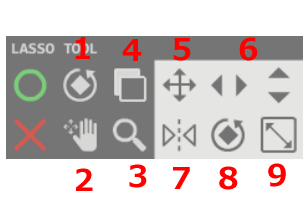 라소툴을 선택후 캔버스에 수정하고 싶은 영역을 그립니다.
그러면 라소툴메뉴가 마우스커서에 따라 붙습니다.
뒤집기(Mirror)와 복사(Copy)버튼은 클릭, 다른 버튼들은 클릭+드래그로 이미지를 조절하면 됩니다.
라소툴 사용중 툴 박스를 사용하여 캔버스를 조작할수도 있습니다.
단축키 화살표 키로 1픽셀식 이동 가능하며, Enter와 Esc로 확인과 취소를 할 수 있습니다.
아래 동영상을 참고하세요.
캔버스 크기 바꾸기
캔버스 크기 바꾸는 방법은, 캔버스의 회색 테두리를 마우스 오른쪽 클릭을 하면 하늘색으로 색이 바뀝니다.
그 상태에서 마우스 왼쪽 클릭을 한 후 커서를 움직여주세요.
캔버스 밖을 나간 이미지 데이터는 사라집니다.
최대크기는 2000x2000픽셀입니다.
단축키 Ctrl키를 누른상태로, 캔버스 테두리를 클릭+드래그 해도 크기를 바꿀 수 있습니다.
아래 동영상을 참고하세요.